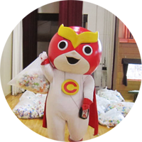
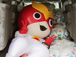
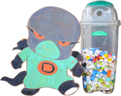
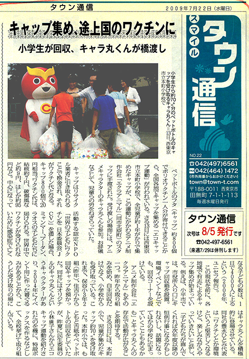

キャラ丸くんが、エコキャップの回収に行きます！

西東京市内の小学校を中心に、キャラ丸くんはエコキャップの回収を行っています。朝礼への参加もします。西東京市内に限らず、お呼ばれすればもっと遠くまで出張することもあります。もちろん無料です。
興味がありましたら、一度ご相談ください。


飲み終わったペットボトルのキャップ、どうしていますか。
ゴミとして焼却処分されると400個で3.150gのCO2が発生するキャップですが、分別して集めることで資源にすることができます。
世界の子どもたちにワクチンを届けよう！
キャップ400個＝10円
ポリオワクチン＝1人分20円
キャップ800個で1人の子どもの命が救えます。


エクラアニマルでは、常時エコキャップの回収を行っています。
会社の前の通りに回収ボックスがおいてありますので、ご自由にお入れください。
回収ボックスが外に出ていない場合は、お気軽に声をかけてください。
株式会社エクラアニマル
所在地：〒188-0003
東京都西東京市北原町3-6-10
